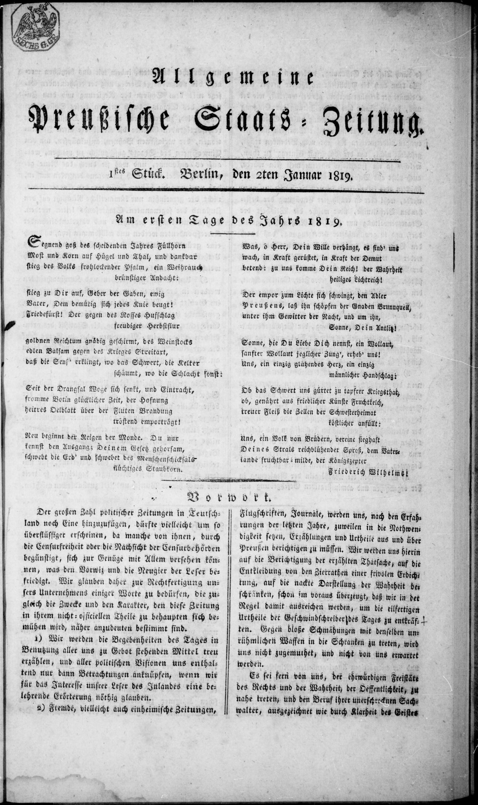
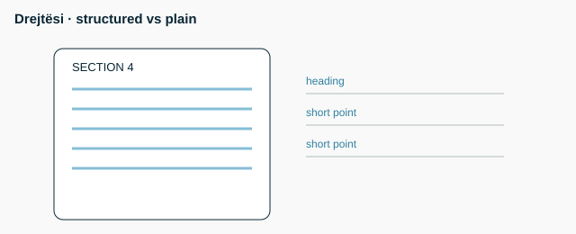

Lex superior: norma më e lartë mbizotëron Lex specialis: e veçanta mbizotëron mbi të përgjithshmen Lex posterior: e vonshmja mbizotëron mbi të vjetrën Hierarkia: Kushtetutë > ligj > akt nënligjor Rendi i aplikimit: superior, pastaj specialis, pastaj posterior (praktikë mësimore)